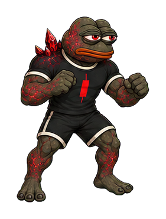

PEPE LEGENDSPepe's Paradox
Level 1 · Stage 1Moonlit Approach
Shards0 / 12
Relics0 / 2
Hidden Frogs0 / 1

Fallen Pepe
Lanterns mark safe footing. Falls preserve your collectibles; dash through wisps to disperse them.
Follow the trail to Fallen, then reach the temple gate.